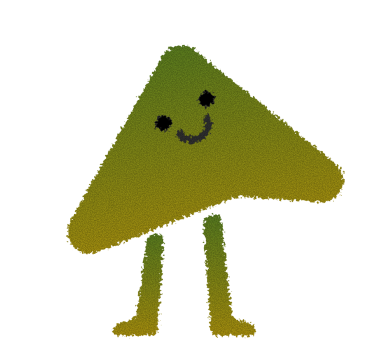

CONOCE QUIÉNES ESTÁN DETRÁS DE ESTE GRAN PROYECTO QUE BUSCA TRANSFORMAR REALIDADES.

Somos una Fundación sin fines de lucro, de derecho privado, compuesta por 15 miembros. Buscamos contribuir al desarrollo de las personas entregando oportunidades de talleres de oficio y de entretención, y así ir mejorando las condiciones para las mujeres, hombres y adultos mayores de escasos recursos.
Manos en Acción es una fundación creada el año 2021 por la ex funcionaria pública Cristina Fuentes Jeria, abierta, no partidaria, que se inspira en los valores y obra de su fundadora.
Nuestro sello es priorizar la participación, el emprendimiento laboral, la reinserción y la entretención. Nuestros valores son ayudar al más vulnerable, la justicia social, igualdad de género y el reconocimiento a la integración.


Nace en la ciudad de Melipilla el 12 de noviembre de 1959. Su infancia la vivió en Chocalán junto a su abuelita materna de donde heredó las manualidades, costura, tejido y pintura.
Con una vasta trayectoria en el servicio público, trabajó en la Municipalidad de Santiago, Arica, y en la Dirección del Trabajo como Fiscalizadora de Terreno. Se jubiló a los 65 años contando con 45 años como Servidora Pública.
Fundó en 2021 Manos en Acción, con el objetivo de ayudar a las personas a reintegrarse en el ámbito laboral dictando talleres, creando un lugar acogedor donde todos se sientan como en casa con mucho cariño y amor.
Fundadora y Directora General Ejecutiva
Directora de Asuntos Jurídicos y RR.II.
Directora Ejecutiva Sede Paine
Director Ejecutivo de Innovación
Secretaria
Tesorero